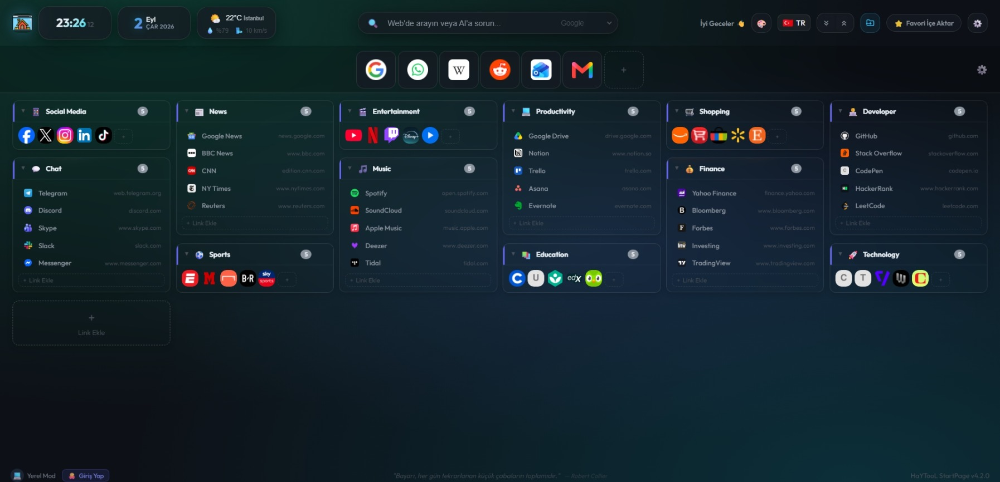

Tarayıcınızı Geleceğe Taşıyın
HaYTooL Cloud StartPage; buzlu cam (Glassmorphism) estetiği, ultra hızlı yerel mimari ve Firebase tabanlı kesintisiz GitHub bulut senkronizasyonu ile donatılmış modern başlangıç sayfanızdır.

Güçlü ve Ayrıcalıklı Özellikler
Klasik yer imi kalabalığından kurtulun, üretkenliğinizi zirveye taşıyın.
Sıfır Parlama & Anında Açılış
Senkronize tema önyükleyicisi ile sayfa açılırken hiçbir tema parlaması (FOIT) yaşanmaz. Saf Vanilla JS ile 50ms'nin altında ışık hızında yüklenir.
GitHub Bulut Senkronizasyonu
GitHub hesabınızla tek tıkla bağlanın. Tüm linkleriniz, klasör dizilimleriniz ve ayarlarınız 10 saniyelik tasarruf moduyla tüm cihazlarınıza anında eşitlensin.
Akıllı Klasör & Kısa Liste Modu
Her klasör için bağımsız İkon (⊞), Liste (📋) veya 10'lu Kısa Liste (📃) modu seçin. Linklerinizi tek tıkla A-Z sıralayın, sürükleyip bırakarak düzenleyin.
Fare Orta Tuşu ile Gizli Klasörler
Ayarlar veya üst kontrol butonlarına fare tekerleğiyle (orta tık) bastığınızda gizlenmiş özel klasörleriniz anında görünür hale gelir veya gizlenir.
Canlı Hava Durumu & Arama
Open-Meteo destekli canlı hava durumu widget'ı, küresel şehir arama desteği, otomatik koordinat doğrulama ve çevrimdışı önbellek koruması.
Dinamik Temalar & Kişiselleştirme
Karanlık, Aydınlık, Aurora, Siberpunk ve AMOLED temaları. Özel duvar kağıdı tanımlama, sütun sayısı ve widget görünürlük kontrolleri.
7 Dil Desteği & Yerelleştirme
Türkçe, İngilizce, Almanca, İspanyolca, Fransızca, Rusça ve Portekizce dillerinde tam yerel arayüz ve Chromium mağaza desteği.
const StartPageConfig = {
platform: "Chromium Manifest V3",
performance: "Zero-dependency Vanilla JS & CSS3",
security: "Origin-isolated WebChannel & Long-Polling",
storage: "Local-First + Cloud Firestore Sync",
features: ["Smart Folders", "Favorites Bar", "Multi-Engine Search", "Weather API"]
};